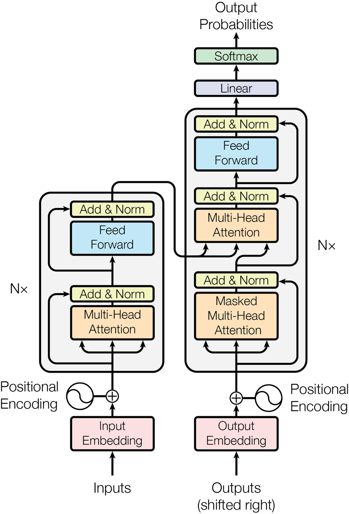
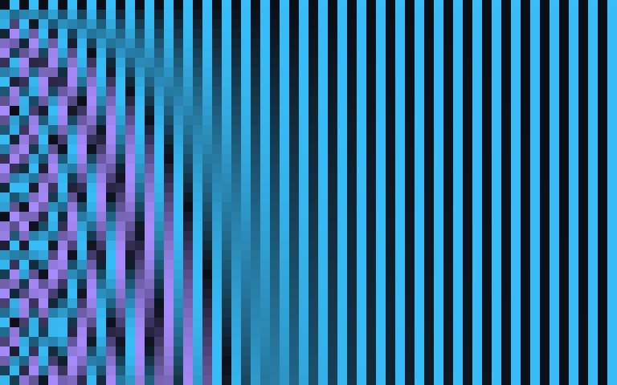
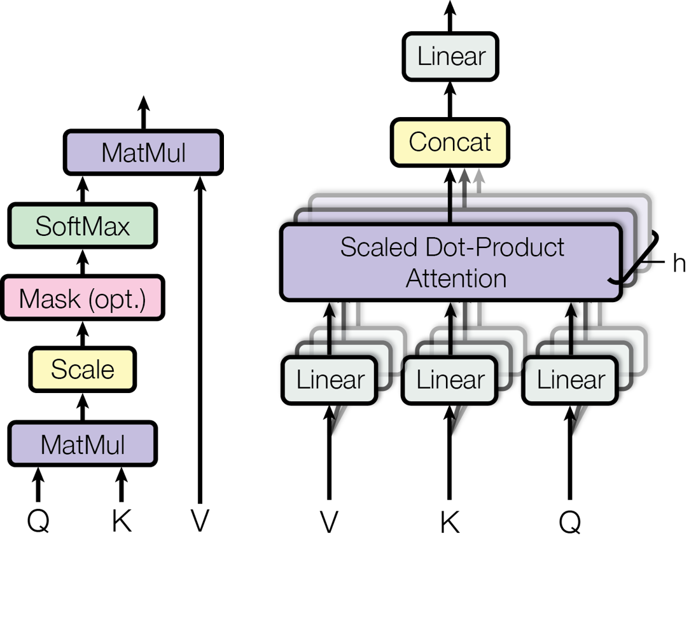

«This inherently sequential nature precludes parallelization within training examples» (Vaswani et ál., 2017). La atención venía de Bahdanau, Cho y Bengio (2014).
2017 · Attention Is All You Need
El mapa de esta charla

Vaswani et ál. (2017), fig. 1. Reproducida con el permiso de Google para uso académico que trae arXiv (v7).
Tokens: el texto se parte en pedazos
Embeddings: cada pedazo, un vector
Posición: el orden se agrega al vector
Atención: cada token mira a los demás
Bloques: atención y una red pequeña, apilados N veces
Salida: probabilidades del siguiente token
Paso 1 · tokenización
El texto se parte en tokens
GPT-2 · español
La bomba 3 presenta vibración alta y temperatura elevada en el rodamiento.24 tokens
GPT-2 · inglés
Pump 3 shows high vibration and elevated temperature in the bearing.13 tokens
Qwen2.5 · español
La bomba␣3 presenta vibración alta y temperatura elevada en el rodamiento.19 tokens
Qwen2.5 · inglés
Pump␣3 shows high vibration and elevated temperature in the bearing.14 tokens
Un token es un pedazo de palabra. Es la unidad de lo que se cobra en una API, desde la Sesión 2.
Tokenizadores reales de GPT-2 (2019) y Qwen2.5 (2024). Generado con ejemplos/modelo_de_lenguaje.py.
Detalle: cómo se arma el vocabulario de tokens
Consulta
Tokenización
Cómo se arma el vocabulario de tokens
La técnica más usada es la de pares de bytes (BPE, Sennrich et ál., 2016): se empieza con letras sueltas y se unen, una y otra vez, los pares que más se repiten en el texto de entrenamiento, hasta llegar al tamaño de vocabulario deseado.
Las palabras frecuentes quedan enteras; las raras se arman con pedazos. Por eso el vocabulario depende de los idiomas con que se entrenó.
Vocabularios: GPT-2, unos 50 000 tokens; Qwen2.5, 151 936.
«rodamiento» · GPT-2
rodamiento4 tokens
«rodamiento» · Qwen2.5
rodamiento3 tokens
«temperatura» · GPT-2
temperatura3 tokens
«temperatura» · Qwen2.5
temperatura1 token
Paso 2 · embeddings
Cada token es un vector de números
Cada token se convierte en una lista de números que se aprende al entrenar.
Tokens con significados parecidos quedan cerca. Es la idea de CLIP en la Sesión 4.
Pero el vector inicial de «banco» es el mismo en «el banco aprobó el crédito» y en «se sentó en el banco».
Paso 3 · la posición
Sin posición, el orden se pierde
«El técnico revisó la bomba» y «la bomba revisó al técnico» tienen casi los mismos tokens.
La atención mira todo a la vez: sin ayuda, no sabe quién va primero.
La solución: sumar a cada vector un patrón de ondas distinto para cada posición.

Codificación posicional de Vaswani et ál. (2017): una fila por posición (40) y una columna por dimensión (64); cian positivo, violeta negativo. Generado con ejemplos/modelo_de_lenguaje.py.
Detalle: la fórmula de la codificación posicional
Consulta
Codificación posicional
La fórmula de la codificación posicional
es la posición del token y la dimensión. Las longitudes de onda van de a .
El vector que entra al primer bloque es el embedding del token más este patrón.
Los autores probaron también posiciones aprendidas y obtuvieron «resultados casi idénticos» (tabla 3, fila E).
Paso 4 · la atención
Cada token mira a los demás
«…en el banco»: ¿cuál banco?
El token reparte su atención entre los tokens anteriores, y se mezcla con lo que encuentra.
En un modelo real, «banco» atiende sobre todo a crédito.
«El gerente pidió el crédito para la planta en el banco». Qwen2.5-0.5B, capa 12 de 24, promedio de sus 14 cabezas, sin el primer token, que recibe buena parte de la atención sin aportar significado (Xiao et ál., 2024). Generado con ejemplos/modelo_de_lenguaje.py.
La atención por dentro
Consulta, clave y valor
Como una búsqueda en una tabla, pero suave: en lugar de traer una fila, trae una mezcla de todas, según qué tanto coincide cada clave.
Detalle: la fórmula de la atención
Consulta
La atención por dentro
La fórmula de la atención

Vaswani et ál. (2017), fig. 2, con el permiso de Google para uso académico.
: todas las consultas contra todas las claves, en una sola multiplicación de matrices; por eso se paraleliza.
Se divide por (en el original, ) para que los productos no crezcan tanto que el softmax se sature.
Softmax: : convierte puntajes en pesos que suman 1.
Lo que logra la atención
El contexto cambia el vector
Antes de la primera capa
1
2
3
4
1 · pagar en el banco
1,00
1,00
1,00
1,00
2 · crédito en el banco
1,00
1,00
1,00
1,00
3 · se sentó en el banco
1,00
1,00
1,00
1,00
4 · descansar en el banco
1,00
1,00
1,00
1,00
Después de 12 capas
1
2
3
4
1 · pagar en el banco
1,00
0,89
0,75
0,74
2 · crédito en el banco
0,89
1,00
0,76
0,75
3 · se sentó en el banco
0,75
0,76
1,00
0,90
4 · descansar en el banco
0,74
0,75
0,90
1,00
Antes de la primera capa, «banco» es el mismo vector en las cuatro frases. Después, las dos frases de dinero se parecen entre sí, y las dos de asiento también.
Similitud coseno entre los vectores de «banco». Qwen2.5-0.5B. Generado con ejemplos/modelo_de_lenguaje.py.
Atención multicabeza
Varias atenciones a la vez
Una sola atención mezcla todo en un promedio.
Varias cabezas en paralelo, cada una con sus propias consultas, claves y valores, captan relaciones distintas.
El original usa 8 cabezas; Qwen2.5-0.5B, 14 por capa.
Detalle: la fórmula de la atención multicabeza
Consulta
Atención multicabeza
La fórmula de la atención multicabeza
Cada cabeza proyecta los vectores con sus propias matrices . En el original, cabezas de dimensión , de modo que el costo total es parecido al de una sola cabeza de dimensión completa.
Paso 5 · el bloque transformer
Atención y una red pequeña, apiladas
Después de la atención, cada token pasa por una red pequeña: un perceptrón multicapa como el del Laboratorio 5A.
Los atajos (conexiones residuales) y la normalización hacen posible apilar muchos bloques.
El original apila 6; Qwen2.5-0.5B, 24; GPT-3, 96.
Detalle: las piezas del bloque y la configuración original
Consulta
El bloque transformer
Las piezas del bloque y la configuración original
Red de alimentación directa, en cada posición
Cada subcapa, con atajo y normalización
Transformer original
base
grande
Bloques (N)
6
6
Dimensión del vector
512
1024
Cabezas
8
16
Red interna
2048
4096
Parámetros
65 M
213 M
Entrenamiento, 8 GPU P100
12 h
3,5 días
Vaswani et ál. (2017), secciones 3 y 5 y tabla 3. Atajos: He et ál. (2016); normalización por capa: Ba et ál. (2016).
Paso 6 · las dos mitades
Codificador y decodificador
Consulta
Atención enmascarada
La máscara del decodificador
Cada fila es un token que atiende; cada columna, un token atendido. En el decodificador, las celdas por encima de la diagonal se bloquean: se les asigna −∞ antes del softmax y su peso queda en cero.
Así, al entrenar, el modelo aprende a predecir cada token viendo solo los anteriores, y todos los tokens de una frase se entrenan a la vez.
Los modelos solo decodificador, como GPT y los LLMs actuales, usan esta máscara en todas sus capas.
Tres familias
Con las dos mitades se arman tres familias
Solo codificador
BERT (2019): 110 y 340 millones de parámetros.
Para entender: clasificar, buscar, comparar textos.
T = 0,2 · se repite…es un problema de la bomba. El problema es el problema de la bomb…
T = 0,8 · plausible…es un defecto de carpeta o una rotura en la válvula…
T = 1,3 · sin sentido…es un «fechazo ultracreelévoir fiuse». Es.perform…
Qwen2.5-0.5B. Las continuaciones salen de muestrear con cada temperatura, con semilla fija. Generado con ejemplos/modelo_de_lenguaje.py.
Detalle: la fórmula y lo que pasa hoy en las APIs
Consulta
Elegir el siguiente token
La fórmula y lo que pasa hoy en las APIs
son los puntajes de salida; es la temperatura. Con la distribución se concentra; con se aplana (Holtzman et ál., 2020).
Top-p (muestreo de núcleo): se elige solo entre los tokens más probables cuya probabilidad suma .
En las APIs actuales (consultado el 29 de octubre de 2026):
Anthropic: en Claude Sonnet 5.5 y Haiku 5.5, enviar temperature devuelve un error 400.
Google: Gemini 3.6 Flash y posteriores lo ignoran.
OpenAI: en GPT-6, se retira cuando el razonamiento está activo.
Los proveedores controlan el muestreo de sus modelos de razonamiento; la temperatura sigue siendo la idea para entender cómo se elige cada token.
Síntesis
Lo que hace un transformer, en una línea
En el Laboratorio 5B, un transformer pequeño de la familia codificador frente a las arquitecturas de antes.
A continuación · 60 min
Laboratorio 5B · Leer órdenes de trabajo con un transformer
Enviar cada orden de MantenIA al equipo que debe atenderla: eléctrico, mecánico, fugas o instrumentación.
Comparar
bolsa de palabras, red recurrente y un transformer preentrenado, con los mismos ejemplos
Poner a prueba
con órdenes propias, escritas con otras palabras, y con un LLM actual
Sin escribir código
notebook de configuración, en parejas
Referencias de la charla intermedia
Para profundizar
Vaswani, A. et ál. (2017). Attention is all you need. NeurIPS 30, 5998–6008. NeurIPS · arXiv (v7)
Bahdanau, D., Cho, K. y Bengio, Y. (2015). Neural machine translation by jointly learning to align and translate. ICLR. arXiv · Hochreiter, S. y Schmidhuber, J. (1997). Long short-term memory. Neural Computation 9(8). PDF
Sennrich, R., Haddow, B. y Birch, A. (2016). Neural machine translation of rare words with subword units. ACL, 1715–1725. ACL Anthology · Mikolov, T. et ál. (2013). Efficient estimation of word representations in vector space. arXiv
He, K. et ál. (2016). Deep residual learning for image recognition. CVPR, 770–778. CVF · Ba, J. L., Kiros, J. R. y Hinton, G. E. (2016). Layer normalization. arXiv
Devlin, J. et ál. (2019). BERT. NAACL, 4171–4186. ACL Anthology · Radford, A. et ál. (2018, 2019). GPT y GPT-2. OpenAI · Raffel, C. et ál. (2020). T5. JMLR 21(140). JMLR · Brown, T. et ál. (2020). GPT-3. NeurIPS 33. arXiv
Holtzman, A. et ál. (2020). The curious case of neural text degeneration. ICLR. arXiv · Xiao, G. et ál. (2024). Efficient streaming language models with attention sinks. ICLR. arXiv
Qwen Team (2024). Qwen2.5 technical report. arXiv · IBM (2025). Granite embedding models. arXiv
Alammar, J. (2018). The Illustrated Transformer. jalammar.github.io · Prince (2023), Understanding Deep Learning, cap. 12. PDF · Zhang et ál., Dive into Deep Learning, cap. 11. d2l.ai